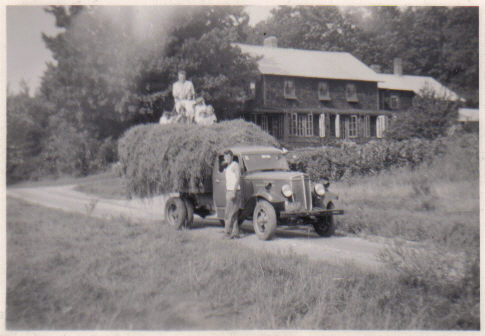
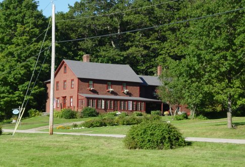

Blueberry Hill Farm has been growing blueberries for over 80 years. In 1941, Robert W. Austin (1908–1986), a Harvard Business School professor, planted the first bushes after discovering the acidic soil in Mt. Washington was perfect for blueberries. He was right—the berries have thrived ever since.
We grow several varieties of highbush blueberries: Rancocas, Jersey, and Rubel, as well as some Bluecrop and Berkeley Bluebay bushes added in the 1990s.
History of Mt. Washington, MA
The area was settled in the late 1600s by Dutch pioneers. Originally part of New York, the land became part of Massachusetts after a colonial boundary dispute was resolved. Mt. Washington was incorporated in 1779 and today remains the smallest town in the state by population.
 